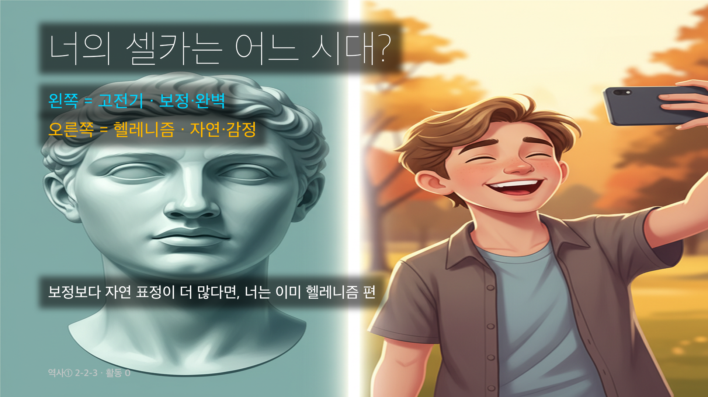
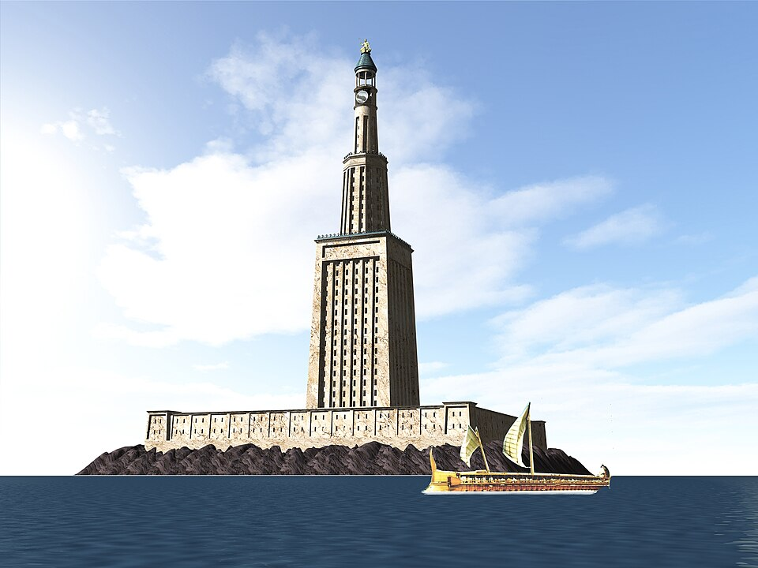
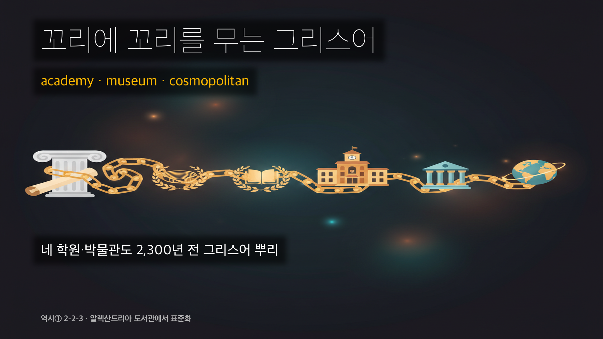

역사① Ⅱ단원 15차시 — 한 사람의 13년이 1,000년을 만들다

📌 학습 목표
- 알렉산드로스의 정복 과정과 헬레니즘 문화 형성을 인과관계로 설명할 수 있다.
- 폴리스 시대(고전기)와 헬레니즘 시대의 차이를 비교할 수 있다.
- 우리나라 석굴암이 어떻게 그리스 문화의 후손인지 자신의 관점으로 서술할 수 있다.
✨ 오늘의 어휘 (쉽게)
- 헬레니즘 (Hellenism): Hellas(그리스인이 자기 땅 부르는 이름) + ism(주의) = 그리스 문화가 동방으로 퍼져 만들어진 새 문화
- 폴리스 (polis): 시민 수천~수만 명의 작은 도시 국가. 시민이 직접 정치에 참여
- 알렉산드리아: 알렉산드로스가 정복지마다 세운 도시 이름. 70개 정도
- 간다라: 인도 서북부(현 파키스탄) 지방. 부처상이 그리스 신처럼 만들어진 곳
- 세계 시민주의 (cosmopolitan): 내 폴리스 X·세계 시민이라 생각하는 사고. kosmos(세계) + polites(시민)
📖 1단계: 도입 — 여러분 책상 위에 그리스 신이 있다?
🎙️ 진짜야. 너 핸드폰 사진첩에 있을 법한 경주 석굴암, 그거 사실 2,300년 전 그리스 조각의 후손이야. 안 믿겨? 한 사람이 딱 13년 동안 한 일 때문인데 — 끝까지 따라와 봐.
🖼 사진 비교 (3분)
>
- 왼쪽: 그리스 신상 (B.C. 5세기)
- 가운데: 간다라 부처상 (A.D. 1~2세기·정복 약 400년 뒤)
- 오른쪽: 금동미륵보살반가사유상 (한국 국보·8세기·정복 약 1,000년 뒤)
>
옷주름·곱슬머리·콧날 — 세 얼굴이 거의 똑같다. 어떻게? 답: 한 사람의 13년 정복 때문.


💡 이게 왜 너랑 상관 있냐면 — 너의 핸드폰 안 경주 석굴암·국립중앙박물관 불상도 그리스 신상의 후손이야.
✏️ 활동 0: 너의 카메라 롤은 어느 시대?

🎙️ 3분 미션 — 진짜 폰 꺼내서 해보자.
① 카메라 롤 열기 → ② 최근 내 셀카 5장 보기 → ③ 각 장을 '보정 많음(완벽·무표정)' vs '자연 표정(웃음·찡그림)' 둘 중 하나로 체크 → ④ 더 많은 쪽이 너의 "시대" → ⑤ 아래 표에 결과 적기.
| 시대 | 특징 |
| 고전기 그리스 (B.C. 5세기) | 완벽한 신상·이상화·표정 X·보정 셀카에 가까움 |
| 헬레니즘 (B.C. 4~1세기) | 라오콘의 고통·자연 표정·움직임·감정 그대로 |
| 항목 | 너의 답 |
| 너의 5장은 어느 시대? | □ 고전기 □ 헬레니즘 □ 반반 |
| 이유 1줄 |
💡 반전: 너의 셀카가 자연 표정 더 많음 = 2,300년 전 헬레니즘 미술과 같은 길. 너는 이미 헬레니즘의 후손. 4단계 ⑪에서 왜 그런지 다시 만난다.
📖 2단계: 알렉산드로스 — 13년 만의 3 대륙

🎙️ 스승이 누구였게? 알렉산드로스의 가정교사는 그냥 동네 선생님이 아니라 — 아리스토텔레스, 서양 철학 최고봉이었어. 13살부터 세계 최고 지성에게 배운 소년이 20살에 왕이 돼 13년 만에 3개 대륙을 정복한다. 배움이 정복을 만든 셈.
| 시기 | 일어난 일 |
| B.C. 356 | 마케도니아 ① 출생·아리스토텔레스가 가르침 |
| B.C. 336 | 부친 암살·20세 즉위 |
| B.C. 334~ | ② 원정 시작 |
| B.C. 326 | 인도 ③ 강 도달 → 그리스 군이 더 못 가겠다 항명·돌아감 |
| B.C. 323 | 바빌론에서 열병으로 사망·33세 |
(교과서: "알렉산드로스는 페르시아를 정복하고 인도 서북부까지 진출하여 거대한 제국을 건설하였다." 비상교육 역사①(이병인) p.47)
⚠️ 반전 — 왕도 군대 마음을 못 이긴다 (히파시스 강 반란·BC 326)
알렉산드로스는 갠지스강까지 정복하려 했지만, 10년 원정에 지친 군대가 우리는 더 못 갑니다 집단 항명. 왕이 3일간 텐트에 틀어박혀 설득 시도 → 실패. 결국 돌아가기로 결정. 인도 본토는 정복 못 했고, 그 자리에 나중에 마우리아 왕조 (E06 6차시 연결)가 들어섰다.
정복의 진짜 효과
- 70개 ④ 도시 건설 (이집트 알렉산드리아 등)
- 그리스인 + 동방인 결혼·이주 정책 (알렉산드로스 본인 페르시아 공주와 결혼)
- 공용어 그리스어 (코이네 = 그리스 공통어)

🎙️ 알렉산드리아 = 고대의 실리콘밸리. 알렉산드로스는 정복지마다 자기 이름을 딴 도시 알렉산드리아를 무려 70개나 세웠어. 그중 이집트 알렉산드리아엔 100m 등대(파로스)·수십만 권 도서관·무세이온(세계 최초의 국립 연구소)이 모여 — 유클리드·아르키메데스·에라토스테네스가 여기서 연구했다. 정복이 칼이 아니라 도시와 학문을 남긴 거야.
💡 너희도 이런 경험?
13년에 3 대륙. 짧게 살아도 길게 남는다. 여러분의 13년은 어떻게 흐를까?
📖 3단계: 다 가진 자 vs 다 버린 자 — 너는 누구에 가까워?
🎙️ 잠깐, 디오게네스가 누구냐고? 통(항아리) 속에서 살던 거지 철학자야. 가진 게 거의 없는데도 세상에서 제일 자유로웠대. 세계를 다 가지려는 알렉산드로스와 정반대지. 그런데 — 헬레니즘 시대엔 이 둘이 동시에 인기였어. 왜? (4단계 ⑩개인주의에서 답이 나와.)
| 인물 | 한 줄 | 너의 평가 |
| ⑤ (다 가진 자·정복자) | 세계 정복 목표·13년에 3 대륙 | _____ |
| ⑥ (다 버린 자·통 속 현자) | 햇빛 가리지 마라·욕망 다 버림·완전한 자유 | _____ |
💡 반전 한 줄: 알렉산드로스가 디오게네스에게 "필요한 것 있으면 말하라" 하자 → 디오게네스 "햇빛 가리지 마라"(=비키라). 알렉산드로스 답: "내가 알렉산드로스가 아니라면 디오게네스이고 싶다". 세계를 다 가진 정복자도 아무것도 없는 자의 자유를 부러워했다.
💡 짝과 1분씩 — 다 가지기 vs 다 버리기, 너는 어느 쪽에 가까운가 골라보자.
📖 4단계: 헬레니즘이란? — 폴리스가 무너지자 4가지가 바뀌었다
헬레니즘은 ⑦ 문화와 ⑧ 문화가 만나 만들어진 새 문화다. B.C. 4세기 후반 ~ B.C. 1세기 (약 300년).
(교과서: "알렉산드로스의 정복으로 그리스 문화가 동방으로 전파되어 헬레니즘 문화가 형성되었다." / "폴리스 중심의 공동체 의식이 줄어들고 개인의 행복을 추구하는 개인주의가 등장하였다." 비상교육 역사①(이병인) p.47)
🔑 왜 갑자기 사람들의 생각이 바뀌었을까? — 열쇠는 폴리스의 붕괴
- 예전 아테네: 시민 수천 명의 작은 공동체 → 내가 직접 민회에서 투표하고, 재판하고, 전쟁에 나갔다. 내 한 표가 나라를 바꿨다. 그래서 "나 = 폴리스 시민"이 정체성이었다.
- 알렉산드로스 이후: 폴리스가 수백만 명 제국에 흡수됨. 정치는 멀리 있는 왕·총독이 결정. 내 한 표는 사라졌다. 시민은 구경꾼이 되었다.
★ 이 한 가지 변화(폴리스 붕괴)에서 아래 4가지가 갈라져 나온다. 4개는 외울 단어가 아니라 한 사건의 네 가지 결과다.
헬레니즘 4 특징 — 무엇 / 왜 그런가 / 너의 일상
| 특징 (빈칸) | 무엇 / 왜 그렇게 됐나 | 구체 예 | 너의 일상 자가진단 |
| ⑨ | 그리스+동방이 섞임을 당연하게 봄. 알렉산드로스가 본인부터 페르시아 공주와 결혼하고 동방인을 관리로 등용 → 섞임이 정책이 됨 | 코이네(공용 그리스어)·간다라 부처(그리스 조각 + 인도 불교) | 어제 만난 외국 콘텐츠·음식·친구 횟수: |
| ⑩ | 폴리스가 사라져 내 한 표가 없어지자 시선을 안으로 → "나라"가 아니라 내 마음·내 행복에서 의미를 찾음 | 에피쿠로스 "빵·물·친구면 족하다"·스토아 "내가 통제할 건 내 마음뿐" | 시민 의무 vs 내 행복 1~10 중 너는: |
| ⑪ 예술 | 자연(nature) = 있는 그대로. 완벽한 신(이상화) X → 고통·늙음·감정을 사실대로. 관심이 이상적 신에서 현실의 인간으로 옮겨갔기 때문 | 「라오콘」 뱀에 감겨 비명 (vs 고전기 「원반 던지는 사람」의 완벽한 균형) | 보정 셀카 vs 자연 표정 뭐가 더 많아? □ 보정 □ 자연 □ 반반 |
| ⑫ ★ | "나는 아테네인" 대신 "나는 세계(kosmos)의 시민(polites)". 제국으로 울타리가 넓어져 다 같은 사람 의식 | 디오게네스 "나는 세계 시민"·국제도시 알렉산드리아·공용어 코이네 | 나는 한국인보다 세계 시민에 가깝다 1~5 동의·이유: |
💡 한 줄 요약: 폴리스가 무너지자 → 시선이 안으로(⑩개인주의)·울타리가 밖으로(⑫세계시민주의) → 예술은 이상에서 현실로(⑪자연주의)·사회는 섞임으로(⑨개방성).


💡 활동 0 회수 — 너의 셀카가 자연 표정 多면 ⑪ 자연주의 직계. 왜? 헬레니즘처럼 완벽함(보정)보다 진짜 나(자연)에 끌리는 시대라서.
🔤 꼬리에 꼬리를 무는 그리스어 — 네 일상에 숨은 2,300년

| 오늘 쓰는 말 | 그리스어 뿌리 | 원래 뜻 → 지금 |
| academy (학원) | Akademeia | 플라톤이 가르치던 숲 이름 → 배우는 곳 |
| museum (박물관) | Mouseion | 학문의 여신 무사(Muse)의 신전 → 전시·연구 공간 |
| cosmopolitan (세계 시민) | kosmos(세계) + polites(시민) | "나는 세계의 시민" → 국경 넘는 감각 |
| philosophy (철학) | philo(사랑) + sophia(지혜) | "지혜를 사랑함" → 철학 |
💡 네 학원(academy)·박물관(museum)도 2,300년 전 그리스어에서 왔어. 모두 알렉산드리아 도서관에서 표준화됐다.
📖 5단계: 간다라 부처 — 융합의 절정
인도 간다라 (B.C. 326 알렉산드로스 정복지) → 400년 후 그 자리에서 부처상이 처음 만들어졌다.
그리스 조각가 후손 + 불교 신앙 = 그리스풍 부처.
1,000년 후까지
간다라 부처 (A.D. 1~2세기)
↓
중국 둔황 → 한국 ⑬ → 일본 호류지
여러분이 경주에서 본 ⑬번 (8세기)도 간다라 → 중국 → 신라로 이어진 헬레니즘의 후손.
⭐ 심화 (읽기만) — 알렉산드리아 도서관 수십만 권(최대 40~70만 추정)·라오콘 군상·아르키메데스 유레카·박트리아 그리스 왕국 등 카테고리 충격 사례는 [[2-2-3 알렉산드로스헬레니즘 자료편 v3]] (교사 학습 노트)에 풍부. 더 알고 싶으면 선생님께 요청.
🔗 핵심 정리 — 인과 사슬
펠로폰네소스 전쟁 (BC 431~404) — 아테네·스파르타 쇠퇴
↓
마케도니아 대두 — ⑭ 가정교사로 알렉산드로스 가르침
↓
알렉산드로스 즉위 (BC 336·20세) → 13년 정복 (3 대륙)
↓
70 알렉산드리아 도시·그리스인 이주·동방인 결혼 정책
↓
폴리스 붕괴 → 헬레니즘 문화 (BC 4~1세기) — 개방성·개인주의·자연주의·세계 시민주의
↓
간다라 부처 (AD 1~2세기) → 중국 → 한국 석굴암 (8세기) → 일본
↓
BC 30 클레오파트라 자결 → 로마에 흡수 → 헬레니즘 → 로마 문명 계승
💡 오늘의 한 줄: 13년이 1,000년을 만들었다 (정복 → 한국 불교조각). 그 여운은 2,300년 뒤 너의 셀카·학원(academy)·박물관(museum)에까지. 짧은 행동·긴 결과·융합이 새 것을 낳는다.
✏️ 활동
활동 1: 사진 5초 비교 — 그리스 신 vs 간다라 부처 vs 한국 반가사유상
공통점 3개·차이점 1개 짧게 적어보자.
| 항목 | 너의 답 |
| 공통점 1 (옷·자세·머리 등) | |
| 공통점 2 | |
| 공통점 3 | |
| 차이점 1 |
활동 2: 3 명 중 너는 누구에 가까워?
알렉산드로스 (정복) · 디오게네스 (욕망 버림) · 간다라 조각가 (융합·새 것).
| 너의 선택 | |
| 이유 (1~2줄) |
활동 3: 너의 24시간 — 헬레니즘 찾기
어제 하루 안 헬레니즘 흔적 1가지 찾기. (영어 단어·한국 불교 미술·미니멀 라이프·소확행·도서관·K-pop 글로벌 팬덤 등)
| 무엇 | 어떤 면이 헬레니즘? (4 특징 중 무엇과 연결?) |
🤔 더 생각해 보기
Q1. 알렉산드로스는 33세에 죽었지만 2,300년 후에도 기억된다. 짧게 살아도 길게 남는 비결은 무엇일까?
Q2. 폴리스가 무너지자 사람들은 내 마음의 행복(개인주의)을 찾기 시작했다. 오늘 우리도 소확행·미니멀 라이프에 끌리는데, 그 마음은 헬레니즘 사람들과 어떻게 닮았을까?
Q3. 우리 국보 석굴암이 그리스 조각의 후손이라는 사실은, '한국 문화'를 어떻게 다시 생각하게 만드는가?
다음 시간 예고
다음 시간: 로마가 제국으로 성장하다 — 헬레니즘을 이어받은 법과 실용의 제국 (2-2-4)
📎 각주
[^1]: 알렉산드로스 가르침. 마케도니아 필리포스 2세 아들·B.C. 343~340 아리스토텔레스에게 사사 (출처: 플루타르코스 『영웅전 — 알렉산드로스』).
[^2]: 디오게네스 일화. 디오게네스 라에르티오스 『그리스 철학자 열전 — 시노페의 디오게네스』.
[^3]: 간다라 양식 한국 전파. 간다라 → 중국 둔황 막고굴(4세기) → 한국 석굴암(8세기 통일신라 경덕왕) → 일본 호류지. 출처: 국립중앙박물관 간다라 미술 도록·John Boardman, The Diffusion of Classical Art in Antiquity(1994).
[^4]: 헬레니즘 시기. 알렉산드로스 사망(B.C. 323) ~ 옥타비아누스 악티움 해전 승리(B.C. 31) 약 290년. 출처: Peter Green, Alexander to Actium(1990).